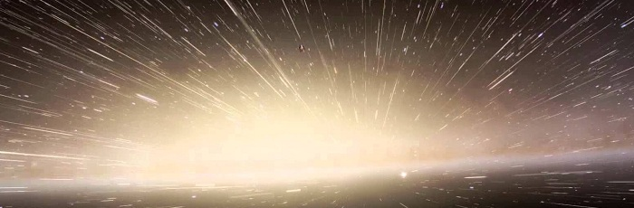

10 научных явлений, без которых вас бы точно не было
Автор: Леонид Гляделов 14 декабря 2017.

Каждый день у нас появляется выбор: принять свою жизнь, свое существование, свободу и моменты как должное или же выразить признательность и благодарность за хорошие вещи, которые нас окружают. Самое же главное, что нас объединяет, — что все мы, люди, живем в одном мире и в одной Вселенной — никогда не заслуживает того уважения, которое заслуживает. Здесь и сейчас мы можем существовать и существовать до тех пор, пока нам позволяет отпущенный нам срок жизни.
Это просто есть. Многократно за всю историю Вселенной законы природы оказывались в нужном месте в нужное время, чтобы обеспечить наше существование и позволить нам взглянуть в прошлое на 13,8 миллиарда лет, с благодарностью в сердце. Перед вами десять явлений, которые сделали это возможным и десять причин сказать спасибо, подобранных физиком Итаном Зигелем.
Читать далее
Каким «видит» мир объект, летящий со скоростью света?

Как известно скорость света – это хоть и большая, но все же конечная величина. Существуют вполне материальные объекты (например, фотоны – частицы из которых и состоит свет), которые двигаются со скоростью света. Как же «выглядит» мир «глазами» таких быстрых объектов?
В обсуждении этого вопроса самое важное место занимает Специальная Теория Относительности (СТО). Согласно выводам этой теории (которые на данный момент хорошо подтверждены экспериментальными фактами), при движении некоторого объекта со скоростью света сколь угодно длительный промежуток времени для этого объекта становится равным нолю.
Важно отметить, что любой промежуток времени, даже миллиарды лет, для объекта разогнавшегося до скорости света обратиться именно точно в ноль, а не в бесконечно малый промежуток времени. А что это значит, если промежуток времени обратился в нулевой?
Читать далее